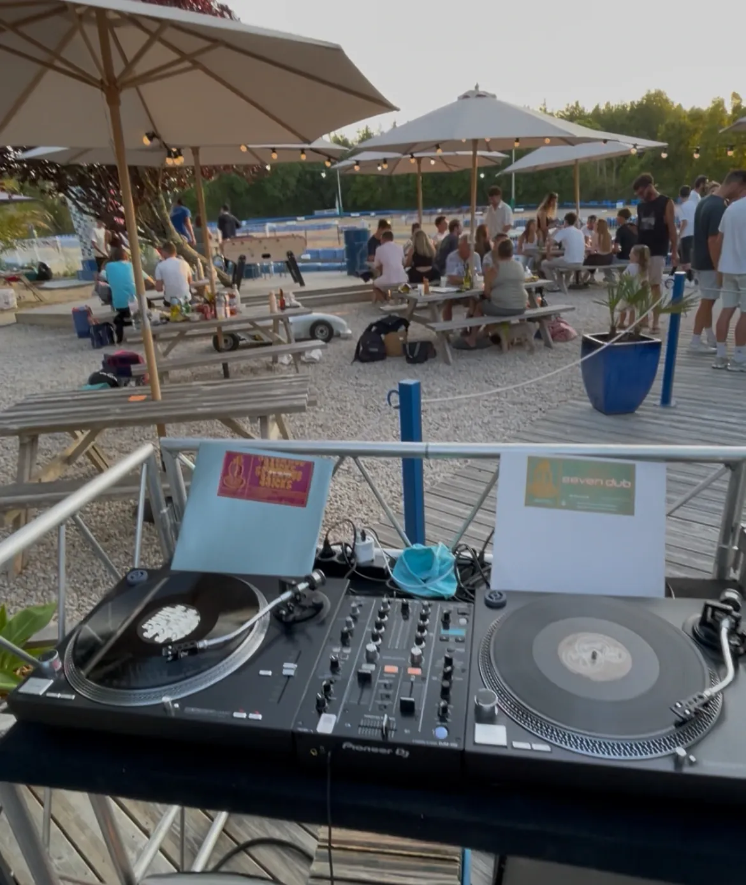
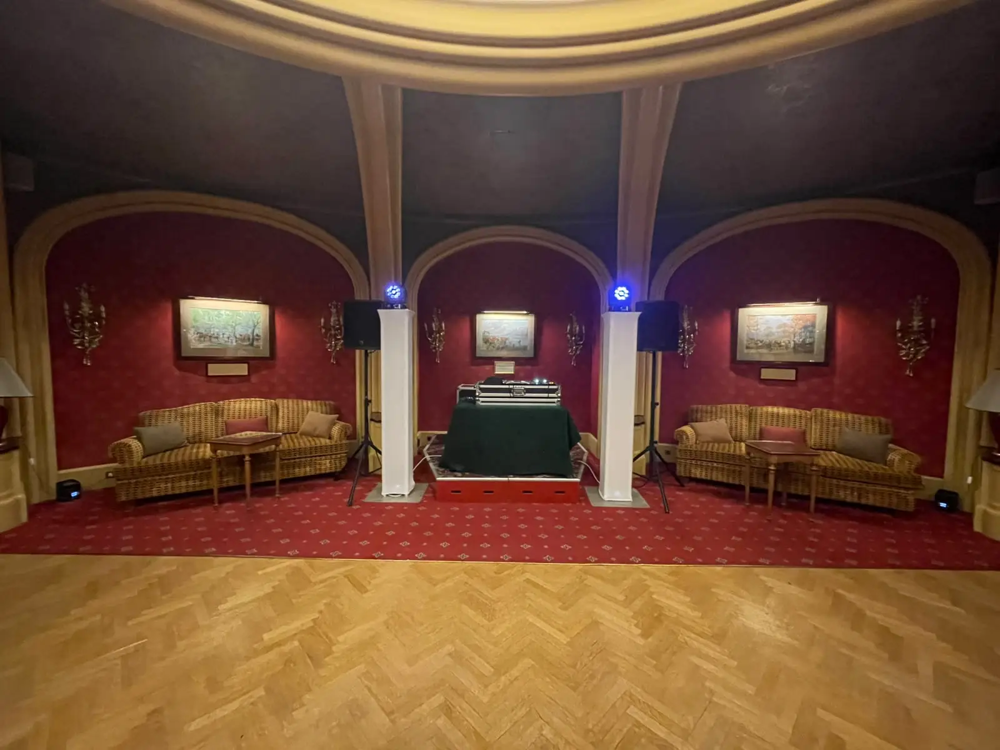

Sonorisation de séminaires & conférences d'entreprise.
En convention ou lors d'une table ronde, chaque intervention compte pour votre image de marque. Voix intelligibles jusqu'à 1 000 m², micros sans fil Shure HF et transition fluide vers le cocktail ou la soirée corporate.
Les 3 piliers techniques d'une conférence réussie
Une régie d'entreprise exige fiabilité avant la première slide, discrétion des équipements dans les showrooms et zéro coupure en direct.
Voix nettes jusqu'à 1 000 m²
Diffusion L-Acoustics calibrée pour l'intelligibilité vocale des keynotes, tables rondes et questions-réponses dans la salle sans fatigue auditive.
L-Acoustics 12XT & LA4Micros sans fil Shure HF & vidéo
Micros main HF Shure stables sur scène et dans le public, mixés sur console Yamaha MG12 avec secours immédiat, plus écran géant ou vidéoprojecteur si nécessaire.
Shure HF & Yamaha MG12Un devis consolidé pour votre direction
Sonorisation seule ou organisation complète avec recherche de lieu, traiteur Beret et Papilles, bar à vinyles et photographe sur un document unique.
Devis poste par poste 24 h


Questions fréquentes
Quelle surface de conférence pouvez-vous sonoriser avec clarté ?
Notre parc L-Acoustics permet de sonoriser des plénières, conventions et inaugurations jusqu'à 1 000 m² (de 40 à 5 000 participants), avec une restitution vocale nette jusqu'au dernier rang sans sifflement ni larsen.
Gérez-vous la transition entre la plénière et le cocktail ou la soirée dansante ?
Oui. La même régie L-Acoustics et les mêmes éclairages pilotés sur console DMX Wolfmix basculent en quelques minutes d'une lumière blanche de conférence vers une ambiance cocktail au bar à vinyles puis vers un DJ set corporate.
Peut-on réunir sonorisation, lieu, traiteur et photo sur un seul devis d'entreprise ?
Oui. Via notre pôle Entreprises clé en main, vous recevez un devis unique détaillé poste par poste sous 24 heures intégrant son, lumière, DJ, recherche de lieu, traiteur Beret et Papilles et photographe ou borne photo.
Vous préparez un séminaire, un lancement ou une soirée corporate ?
Partagez votre cahier des charges ou votre enveloppe : un seul interlocuteur vous répond avec un chiffrage précis sous 24 heures.